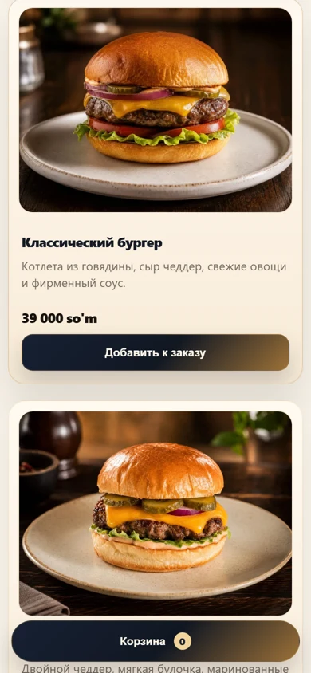
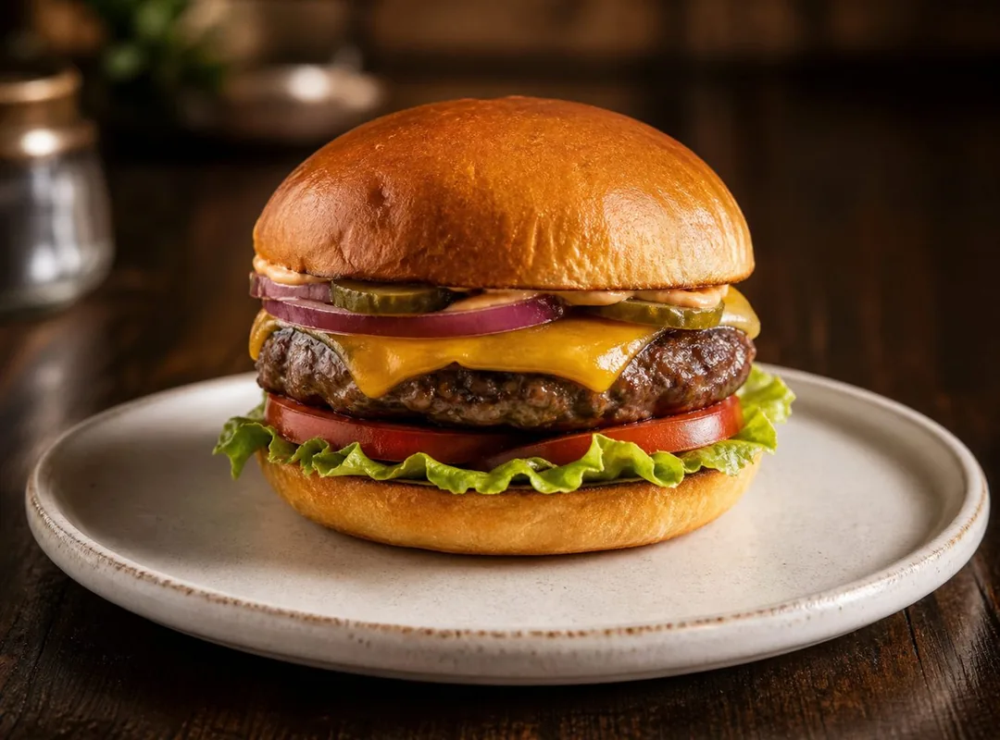
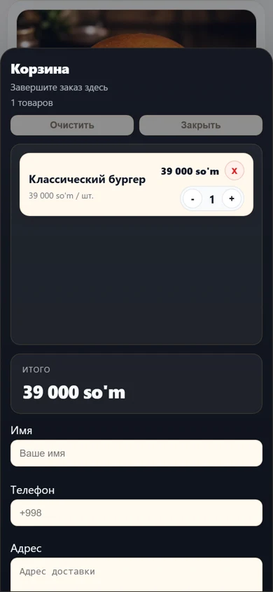
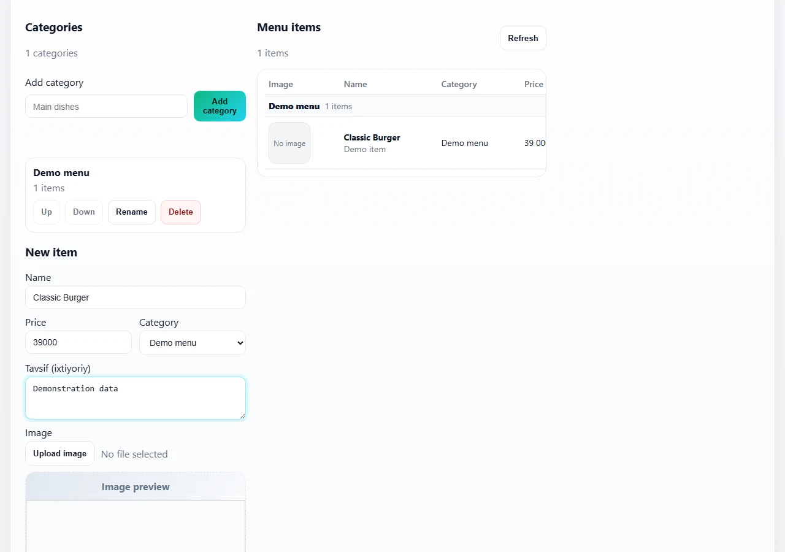

Your customers. Your orders. Your rules.
ONLINE ORDERING FOR CAFES AND RESTAURANTS
Take orders.
Skip the back-and-forth.
Keep every detail.
Guests choose dishes from your online menu. Your team gets the order details and customer contact in one message. All under your restaurant’s brand.
Free demonstration. No commitment.
- A menu under your brand
- Orders in Telegram
- Manage dishes and prices
YOUR MENU, IN THEIR HANDS

For cafesFor restaurantsFor teahousesFor small kitchens
YOUR OWN SALES CHANNEL
Closer to guests. More control.
Develop your own ordering channel alongside marketplace sales. Aggregators help people discover you; QadamUp helps you take direct orders from guests who already know your restaurant.
An order got lost in Telegram
Order details were mixed up
Commission reduced the return
Sound familiar? Give guests a clear path from menu to order, with all the details in one place for your team.
QADAMUP / 01
What could stay with your restaurant?
Try direct orders with your own figures. A scenario estimate, not a promise of profit.
For independent orders, assume manual data entry can be reduced by 50%. This estimates time, not financial savings.
- Existing order turnover / 30 days
- Share moving to your direct channel
- Potential commission avoided / month
We’ll review the benefit with your service plan, payment and delivery costs.
Plan to discuss
Setup: 300,000 UZS. Service: $10 monthly or 5% under the plan terms. Acquiring is separate. Exchange rate and charging rules are agreed before payment.
A 30-day scenario, not net profit. Direct orders are a share of existing turnover, not additional sales. Service fees, acquiring and delivery are separate.
- Monthly manual work
- Potential time freed per month
QADAMUP / 02
Walk in your guest’s shoes.
Isolated interactive demo. Test menu; ordering, notifications and statuses are simulated in your browser only. No messages or payments are sent.
- Open the menu
- Choose a dish
- Add to cart
- Place a test order
- View the notification
- Manage the order
qadamup. / DEMO

Your restaurant · sample menu
Choose a dish, build your cart and see what your team receives.
Telegram · sample order
Classic burger ×
Picture this menu with your restaurant’s name.
Show me my own menu ↘01 / ONLINE MENU
Your menu, always within reach.
Photos, categories, clear prices and a cart. Guests choose their food in a browser, without installing an app.
- Dish photos and descriptions
- Categories for easy browsing
- Cart and checkout

TELEGRAM / QADAMUP
Know what to prepare, and who it’s for.
Items, quantities, total and customer contact in one message. Bot setup and notification delivery are checked during onboarding.
Demo data · localized labels
Explore the demo ↗03 / MENU MANAGEMENT
Update your menu without a developer.
The admin panel implements dish, price, description and category management. Access to the panel is provided separately.

Easy for guests. Clear for your team.
Your brand, your menu
Share one link with your guests: dishes, photos, prices and a cart.
Order details together
See the items and customer contact without piecing together a chat.
You control the menu
Update dishes and prices through the management panel.
Start with your own ordering channel.
Need online payments, reservations or a menu inside Telegram? We can discuss a separate scope and timeline. These options are outside this demo and are not connected automatically.
HOW TO GET STARTED
A simple next step.
- 01
Explore the interface
See real menu and cart screens on this page.
- 02
Tell us about your restaurant
Message the QadamUp owner on Telegram about your menu and ordering workflow.
- 03
Agree on setup
Discuss the features you need, workflow verification and terms.
QADAMUP / 03
Two models. Your own ordering channel.
PLAN YOUR SPENDING
Fixed · $10 / month
Know your service fee in advance. Plan predictable monthly spending for your own ordering channel.
See a demo and choose a planLINK FEES TO ORDER VOLUME
Percentage · 5%
Your service fee follows order volume. Charges are linked to actual orders under the agreed plan rules.
See a demo and choose a planSetup includes an online menu, cart, order intake configuration and menu management access.
Separate costs: payment processing and delivery operations. Any additional services are agreed before payment.
The 5% charging rules and exchange rate for the dollar plan are agreed before payment.
I already have Telegram. Why QadamUp?
A menu link lets guests choose dishes and build an order instead of exchanging lengthy messages.
Can I keep a paper menu?
Yes. Online ordering is an additional option alongside your existing menu.
Do guests need an app?
No. The menu opens in a browser.
How does the restaurant receive orders?
Receive orders in Telegram. During onboarding, we configure the bot and check delivery with a test order. This page uses a safe simulation.
Who handles delivery?
The restaurant arranges delivery. An external delivery service is not included automatically.
Can I change dishes and prices?
An admin panel exists for this. Access and the working flow are agreed during onboarding.
How do payments work?
Online payment is not yet part of the working checkout flow. Availability, timing and processing fees need a separate agreement.
What does setup cost?
300,000 UZS separately from service: $10 monthly or 5% under plan rules. Acquiring fees are separate.
Can I see a demo first?
Yes. Try the safe demo here or request a free demonstration for your restaurant.
QADAMUP / 04
See how QadamUp could work for your restaurant
See the menu, order workflow and a setup option that suits your restaurant. Free, with no commitment.
Open a chat with the QadamUp owner and a draft demo request. Send the message in Telegram to start the conversation.
Discuss my menu on Telegram ↗Message draft
The automatic request form is currently available in local mode only. Request your demonstration through Telegram here.